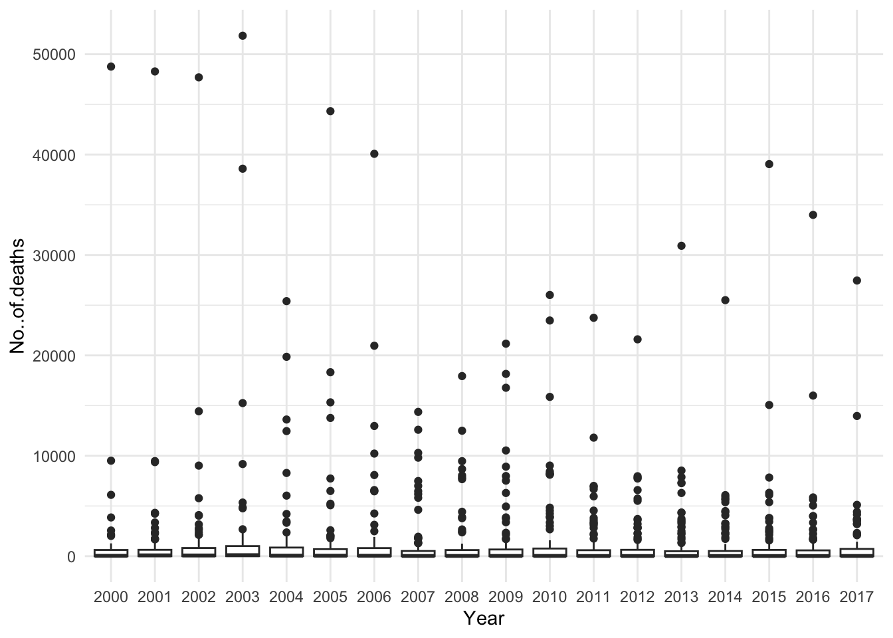
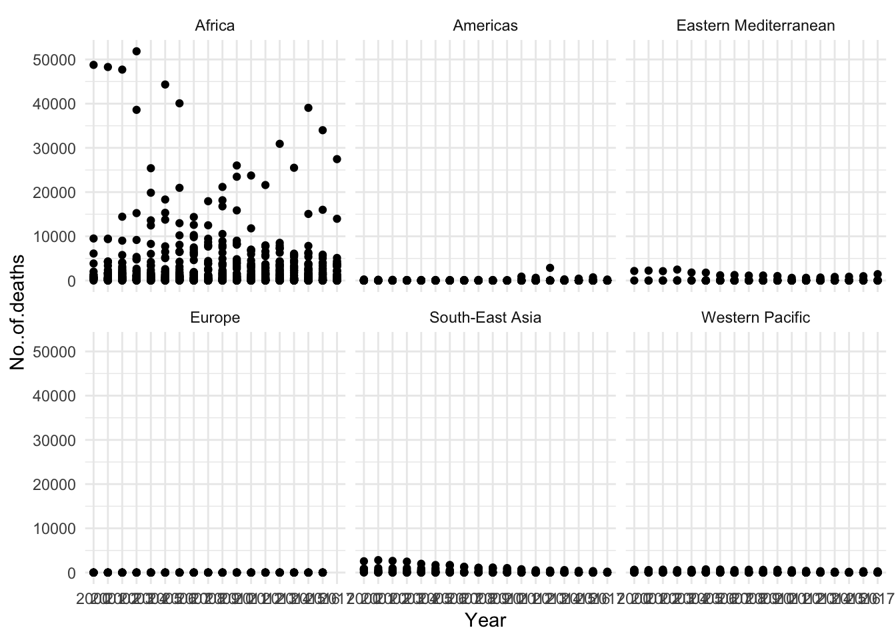
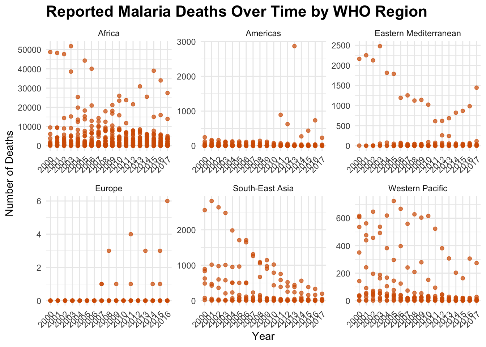
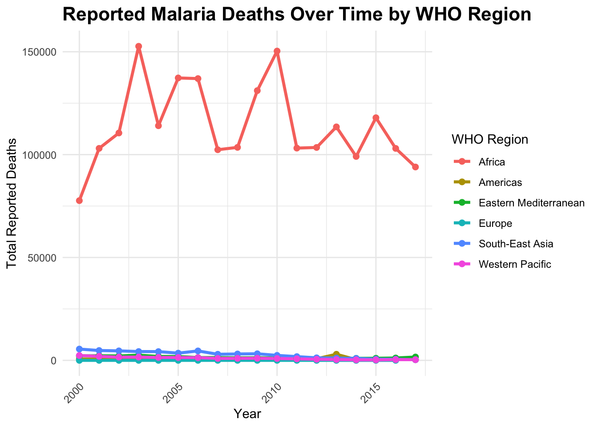

── Attaching core tidyverse packages ──────────────────────── tidyverse 2.0.0 ──
✔ dplyr 1.1.4 ✔ readr 2.1.5
✔ forcats 1.0.0 ✔ stringr 1.5.1
✔ lubridate 1.9.4 ✔ tibble 3.2.1
✔ purrr 1.0.2 ✔ tidyr 1.3.1
── Conflicts ────────────────────────────────────────── tidyverse_conflicts() ──
✖ dplyr::filter() masks stats::filter()
✖ dplyr::lag() masks stats::lag()
ℹ Use the conflicted package (<http://conflicted.r-lib.org/>) to force all conflicts to become errors3 Feride K
Total death cases vs time
4 Scatter Plot for Total Death Cases vs Time Reported
reported %>%
drop_na(No..of.deaths) %>%
mutate(Year = as.factor(Year)) %>%
ggplot(aes(x=Year, y= No..of.deaths))+
geom_boxplot()+
#geom_smooth()+
theme_minimal()
The variance is due to these data being globally. Malaria death effects certain regions around the world hence we cannot say # or use mean deaths etc
reported %>%
drop_na(No..of.deaths) %>%
mutate(Year = as.factor(Year)) %>%
ggplot(aes(x = Year, y = No..of.deaths)) +
geom_point() +
facet_wrap(~ WHO.Region) + # This line facets the plot by country
theme_minimal()
Attaching package: 'data.table'The following objects are masked from 'package:lubridate':
hour, isoweek, mday, minute, month, quarter, second, wday, week,
yday, yearThe following objects are masked from 'package:dplyr':
between, first, lastThe following object is masked from 'package:purrr':
transpose# Set data directory
dir1 <- "../input/malaria-dataset/"
# Load datasets
estimated_numbers <- read.csv("../../data/archive 2/estimated_numbers.csv", stringsAsFactors = FALSE)
incidence <- read.csv("../../data/archive 2/incidence_per_1000_pop_at_risk.csv", stringsAsFactors = FALSE)
reported <- read.csv("../../data/archive 2/reported_numbers.csv", stringsAsFactors = FALSE)
# Merge reported and incidence datasets
data <- reported %>%
left_join(incidence, by = c("Country", "Year", "WHO.Region")) %>%
rename("No.of.cases" = "No..of.cases.x",
"No.of.cases.per.1000.pop.at.risk" = "No..of.cases.y")
# Set plot size for better readability
options(repr.plot.width = 14, repr.plot.height = 10)
# Boxplot of global deaths by year (non-faceted)
reported %>%
drop_na(No..of.deaths) %>%
mutate(Year = as.factor(Year)) %>%
ggplot(aes(x = Year, y = No..of.deaths)) +
geom_boxplot(fill = "#56B4E9", alpha = 0.7) +
labs(title = "Distribution of Reported Malaria Deaths by Year (Global)",
y = "Number of Deaths", x = "Year") +
theme_minimal() +
theme(axis.text.x = element_text(angle = 45, hjust = 1))
# 🟠 Scatter plot of deaths over time, faceted by WHO Region
reported %>%
drop_na(No..of.deaths) %>%
mutate(Year = as.factor(Year)) %>%
ggplot(aes(x = Year, y = No..of.deaths)) +
geom_point(color = "#D55E00", alpha = 0.7) +
labs(title = "Reported Malaria Deaths Over Time by WHO Region",
y = "Number of Deaths", x = "Year") +
facet_wrap(~ WHO.Region, scales = "free") +
theme_minimal() +
theme(plot.title = element_text(size = 16, face = "bold"),
axis.text.x = element_text(angle = 45, hjust = 1))
general trends- what is going on in this region
[1] "Eastern Mediterranean" "Africa" "Americas"
[4] "Europe" "South-East Asia" "Western Pacific" library(tidyverse)
library(ggplot2)
library(data.table)
# Set data directory
dir1 <- "../input/malaria-dataset/"
# Load datasets
estimated_numbers <- read.csv("../../data/archive 2/estimated_numbers.csv", stringsAsFactors = FALSE)
incidence <- read.csv("../../data/archive 2/incidence_per_1000_pop_at_risk.csv", stringsAsFactors = FALSE)
reported <- read.csv("../../data/archive 2/reported_numbers.csv", stringsAsFactors = FALSE)
# Merge reported and incidence datasets
data <- reported %>%
left_join(incidence, by = c("Country", "Year", "WHO.Region")) %>%
rename("No.of.cases" = "No..of.cases.x",
"No.of.cases.per.1000.pop.at.risk" = "No..of.cases.y")
# Set plot size
options(repr.plot.width = 14, repr.plot.height = 10)
# 📈 Line graph of deaths over time by WHO Region
reported %>%
drop_na(No..of.deaths) %>%
group_by(WHO.Region, Year) %>% # <-- group by region and year
summarize(total_deaths = sum(No..of.deaths, na.rm = TRUE)) %>%
ggplot(aes(x = Year, y = total_deaths, color = WHO.Region, group = WHO.Region)) +
geom_line(size = 1.2) +
geom_point(size = 2) +
labs(title = "Reported Malaria Deaths Over Time by WHO Region",
x = "Year",
y = "Total Reported Deaths",
color = "WHO Region") +
theme_minimal() +
theme(plot.title = element_text(size = 16, face = "bold"),
axis.text.x = element_text(angle = 45, hjust = 1))`summarise()` has grouped output by 'WHO.Region'. You can override using the
`.groups` argument.Warning: Using `size` aesthetic for lines was deprecated in ggplot2 3.4.0.
ℹ Please use `linewidth` instead.